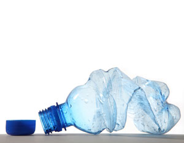

The stresses in our early 21st-century civilization take many forms - social, economic, environmental and political. One distinctly unhealthy and visible illustration of all four is the swelling flow of garbage associated with a throwaway economy.
Throwaway products were first conceived following World War II as a convenience and as a way of creating jobs and sustaining economic growth. The more goods produced and discarded, the reasoning went, the more jobs there would be.
What sold throwaways was their convenience. For example, rather than washing cloth towels or napkins, consumers welcomed disposable paper versions. Thus, we have substituted facial tissues for handkerchiefs, disposable paper towels for hand towels, disposable table napkins for cloth ones, and throwaway beverage containers for refillable ones. Even the shopping bags we use to carry home throwaway products become part of the garbage flow.
The throwaway economy is on a collision course with the Earth’s geological limits. Aside from running out of landfills near cities, the world is also fast running out of the cheap oil that is used to manufacture and transport throwaway products. Perhaps more fundamentally, there is not enough readily accessible lead, tin, copper, iron ore or bauxite to sustain the throwaway economy beyond another generation or two. Assuming an annual 2 percent growth in extraction, U.S. Geological Survey data on economically recoverable reserves show the world has 17 years of reserves remaining for lead, 19 years for tin, 25 years for copper, 54 years for iron ore, and 68 years for bauxite.
The cost of hauling garbage from cities is rising as nearby landfills fill up and the price of oil climbs. One of the first major cities to exhaust its locally available landfills was New York. When the Fresh Kills landfill, the local destination for New York’s garbage, was permanently closed in March 2001, the city found itself hauling garbage to landfill sites in New Jersey, Pennsylvania and even Virginia - with some of the sites being 300 miles away.
Given the 12,000 tons of garbage produced each day in New York and assuming a load of 20 tons of garbage for each of the tractor-trailers used for the long-distance hauling, some 600 rigs are needed to move garbage from New York City daily. These tractor-trailers form a convoy nearly 9 miles long - impeding traffic, polluting the air, and raising carbon emissions.
Fiscally strapped local communities in other states are willing to take New York’s garbage - if they are paid enough. Some see it as an economic bonanza. State governments, however, are saddled with increased road maintenance costs, traffic congestion, increased air pollution, potential water pollution from landfill leakage, and complaints from nearby communities.
In 2001 Virginia’s governor, Jim Gilmore, wrote to Mayor Rudy Giuliani to complain about the use of Virginia for New York City’s trash. “I understand the problem New York faces,” he noted, “but the home state of Washington, Jefferson and Madison has no intention of becoming New York’s dumping ground.”
Garbage travails are not limited to New York City. Toronto, Canada’s largest city, closed its last remaining landfill on Dec. 31, 2002, and now ships all its 750-thousand-ton-per-year garbage to Wayne County, Mich.
In Athens, the capital of ancient and modern Greece, the one landfill available reached saturation at the end of 2006. With local governments in Greece unwilling to accept Athens’s garbage, the city’s daily output of 6,000 tons began accumulating on the streets, creating a garbage crisis. The country is finally beginning to pay attention to what European Union environment commissioner Stavros Dimas, himself a Greek, calls the waste hierarchy, where priority is given first to the prevention of waste and then to its reuse, recycling and recovery.
One of the more recent garbage crises is unfolding in China, where, like everything else in the country, the amount of garbage generated is growing fast. Xinhua, a Chinese wire service, reports that a survey using an airborne remote sensor detected 7,000 garbage dumps, each larger than 50 square meters in the suburbs of Beijing, Tianjin, Shanghai and Chongqing. A large share of China’s garbage is recycled, burned or composted, but an even larger share is dumped in landfills (where they are available) or simply heaped up in unoccupied areas.
These examples of China’s waste problems are disturbing by themselves. But a broader analysis of potential consumption patterns in China in the near future shows why the existing western economic model as a whole will fail.
For almost as long as I can remember, we have been saying that the United States, with 5 percent of the world’s people, consumes a third or more of the Earth’s resources. That was true. It is no longer true. Today China consumes more basic resources than the United States does.
Among the key commodities such as grain, meat, oil, coal and steel, China consumes more of each than the United States except for oil, where the United States still has a wide (though narrowing) lead. China uses a third more grain than the United States. Its meat consumption is nearly double that of the United States. It uses three times as much steel.
These numbers reflect national consumption, but what would happen if consumption per person in China were to catch up to that of the United States? If we assume that China’s economy slows from the 10 percent annual growth of recent years to 8 percent, then before 2030, income per person in China will reach the level it is in the United States today.
If we also assume that the Chinese will spend their income more or less as Americans do today, then we can translate their income into consumption. If, for example, each person in China consumes paper at the current American rate, then in 2030 China’s 1.46 billion people will consume more paper than the world produces today. There go the world’s forests.
If we assume that in 2030 there are three cars for every four people in China, as there now are in the United States, China will have 1.1 billion cars. The world currently has 860 million cars. To provide the needed roads, highways and parking lots, China would have to pave an area comparable to what it now plants in rice.
By 2030 China would need 98 million barrels of oil a day. The world is currently producing 85 million barrels a day and may never produce much more than that. There go the world’s oil reserves.
What China is teaching us is that the western economic model - the fossil-fuel-based, automobile-centered, throwaway economy - is not going to work for China. If it does not work for China, it will not work for India, which by 2030 may have an even larger population than China. Nor will it work for the other 3 billion people in developing countries who are also dreaming the “American dream.” And in an increasingly integrated global economy where we all depend on the same grain, oil and steel, the western economic model will no longer work for the industrial countries either.
The overriding challenge for our generation is to build a new economy - one that is powered largely by renewable sources of energy, that has a much more diversified transport system, and that reuses and recycles everything. We have the technology to build this new economy, an economy that will allow us to sustain economic progress. Can we build it fast enough to avoid a breakdown of social systems?
|
 DOCONNELL/ISTOCKPHOTO Producing products that were meant to be discarded after one use was once seen as a way to sustain economic growth. |
|
|